<title>Case 03 Cold Open Dial</title>
<meta name="viewport" content="width=device-width,initial-scale=1">
<meta name="claude:viewport-fit-sides" content="cover">
<style>
:root{--bg:#0f1719;--card:#182326;--ink:#e9efe9;--mute:#9fb1ae;--acc:#e0b84a;--red:#c8463a;--line:#2e4044;color-scheme:dark}
*{box-sizing:border-box} body{margin:0;background:var(--bg);color:var(--ink);font:16px/1.55 Georgia,"Times New Roman",serif}
main{max-width:1180px;margin:0 auto;padding-block:28px 80px;padding-left:max(16px, env(safe-area-inset-left, 0px));padding-right:max(16px, env(safe-area-inset-right, 0px))}
h1{font:700 32px/1.15 Georgia,serif;margin:0 0 6px;text-wrap:balance} .sub{color:var(--mute);margin:0 0 18px}
video{width:100%;max-width:100%;border-radius:8px;background:#000;display:block;aspect-ratio:16/9}
.note{background:#22302a;border-left:4px solid var(--acc);padding:14px 18px;margin:18px 0 28px;border-radius:4px;font-size:15px;display:flex;flex-direction:column;gap:10px}
.note p{margin:0} .note ol{margin:0;padding-left:20px}
.arc{display:grid;grid-template-columns:repeat(9,minmax(0,1fr));gap:4px;margin:6px 0 2px} .arc i{display:block;height:12px;border-radius:2px}
.beat{background:var(--card);border-radius:10px;padding:18px;margin:0 0 22px} .beat header{display:flex;gap:12px;align-items:baseline;flex-wrap:wrap}
.num{background:var(--red);color:#fff;font:700 14px system-ui,sans-serif;padding:3px 8px;border-radius:4px} h2{margin:0;font-size:21px;flex:1;min-width:12ch}
.dial{font:600 12px system-ui,sans-serif;letter-spacing:.04em;color:var(--acc);border:1px solid var(--acc);border-radius:99px;padding:2px 10px}
.tc{color:var(--mute);font:14px ui-monospace,monospace}
.stills{display:grid;grid-template-columns:repeat(auto-fit,minmax(min(100%,460px),1fr));gap:14px;margin:14px 0}
.pair{margin:0;display:grid;grid-template-columns:1fr 1fr;gap:6px} .pair div{position:relative;min-width:0} .pair img{width:100%;border-radius:6px;display:block}
.pair span{position:absolute;left:6px;top:6px;font:600 11px system-ui,sans-serif;background:rgba(0,0,0,.65);color:#fff;padding:2px 6px;border-radius:3px}
.pair figcaption{grid-column:1/-1;color:var(--mute);font:13px ui-monospace,monospace}
.cols{display:grid;grid-template-columns:1fr 1fr;gap:22px} .cols>div{min-width:0} @media(max-width:760px){.cols{grid-template-columns:1fr}}
h3{font:700 12px system-ui,sans-serif;letter-spacing:.08em;text-transform:uppercase;color:var(--acc);margin:6px 0} .vo{padding-left:20px;margin:0} .vo li{margin:3px 0} .vo .none{list-style:none;margin-left:-20px;color:var(--mute)} p{margin:0}
.snd{list-style:none;padding:0;margin:0} .snd li{display:flex;align-items:center;gap:10px;margin:5px 0;flex-wrap:wrap} .snd span{min-width:170px;color:var(--mute);font-size:14px}
audio{height:30px;max-width:100%}
</style>
<main>
<h1>Case No. 03: The Hill · cold open with the look dial</h1>
<p class="sub">Cold open "It's Not Flat" · storyboard build, 2026-11-10 · for your approval</p>
<video controls preload="metadata" src="video/open_dial_animatic_720p.mp4"></video>
<div class="note">
<p><b>What changed: the picture only.</b> The script, the approved Chatterbox voice, the timing and the mix are the ones you already approved, so this animatic plays with the real voice. The dial is 0 (bright collage) for most of the cold open, because this is the world as it was being sold. It drains to 60 over the tease line ("…a courtroom… a bankruptcy… and a phone call…") and holds there for the title, so Part 1 can open bright again.</p>
<div class="arc" aria-hidden="true"><i style="background:#F2C230"></i><i style="background:#F2C230"></i><i style="background:#F2C230"></i><i style="background:#F2C230"></i><i style="background:#F2C230"></i><i style="background:#F2C230"></i><i style="background:#F2C230"></i><i style="background:linear-gradient(90deg,#F2C230,#C6A350)"></i><i style="background:#C6A350"></i></div>
<p>The white truck and the red PUBLISH key are kept out of the sepia grade, as the episode's accents. The puppets stay generic, the DRAMATIZATION and SOURCES tags are unchanged, and company names are still plain type.</p>
<p><b>Two approvals, please (reply in chat):</b></p>
<ol><li>The picture: keep the dial look, or note changes per beat (for example "0.3: borders too strong").</li><li>Reusing the approved voice and mix as they are. If yes, the next steps are the full-quality render, QC and delivery of the cold open master.</li></ol>
</div>
<section class="beat"><header><span class="num">0.1</span><h2>Night office</h2><span class="dial">Dial 0 · mixed</span><span class="tc">0:00.0–0:16.2</span></header>
<div class="stills"><figure class="pair"><div>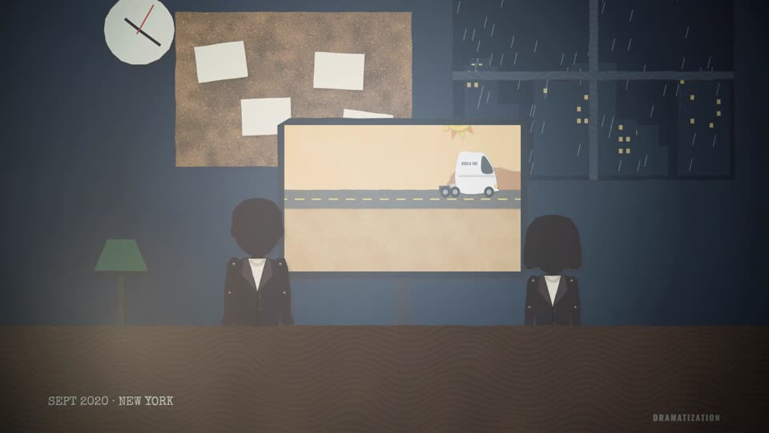<span>Approved</span></div>
<div>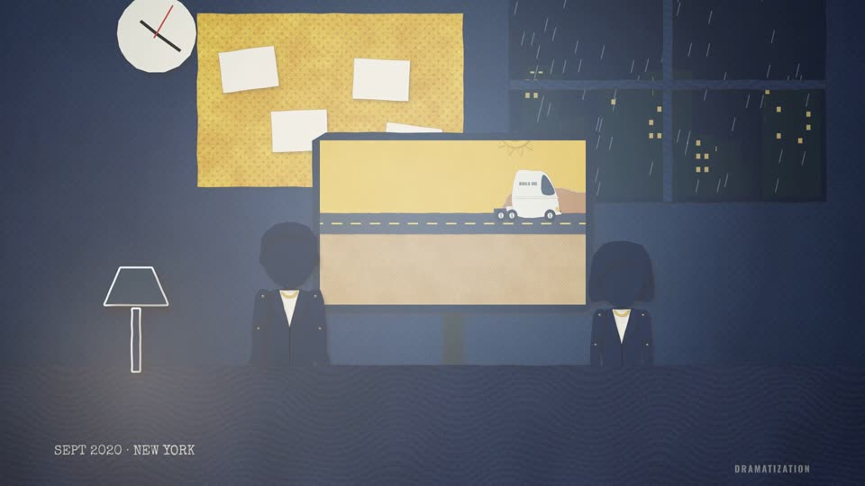<span>Dial build</span></div><figcaption>0:05.7</figcaption></figure><figure class="pair"><div>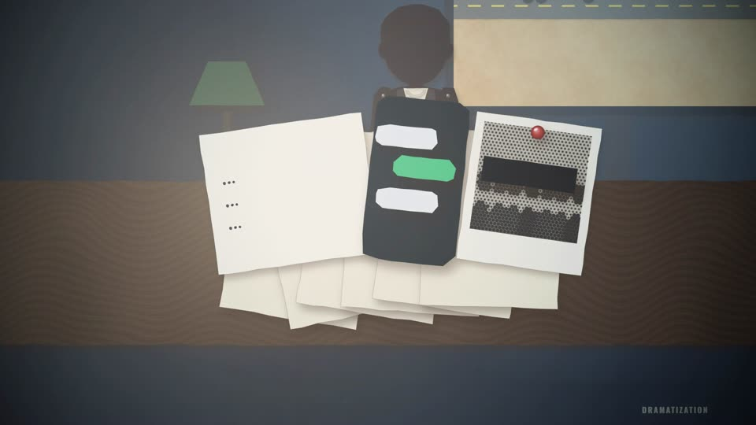<span>Approved</span></div>
<div>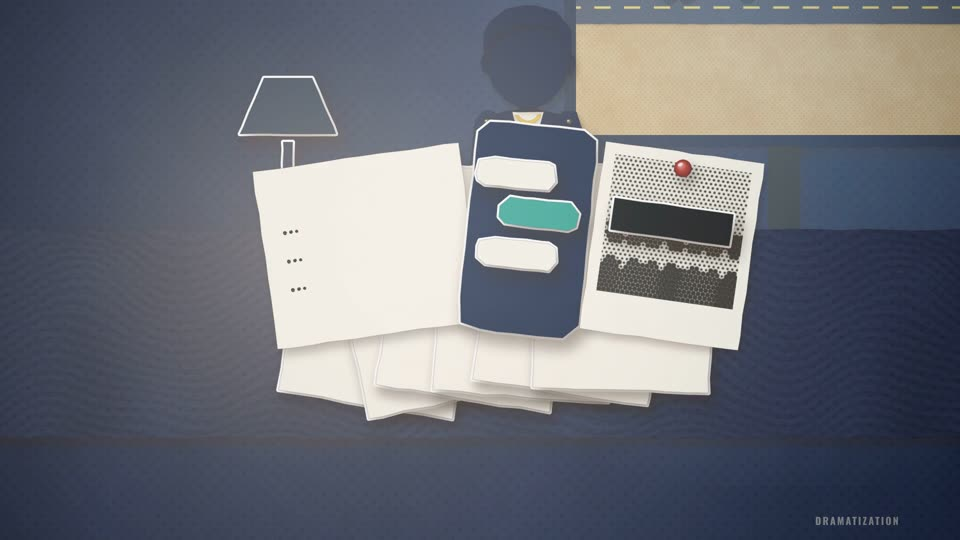<span>Dial build</span></div><figcaption>0:13.0</figcaption></figure></div><div class="cols"><div><h3>Narration (approved take)</h3><ol class="vo"><li>September, twenty twenty. New York.</li><li>A small team of researchers has been digging into one company for months.</li><li>Old videos. Internal messages. Former employees, finally talking.</li><li>And one video they keep coming back to.</li></ol></div>
<div><h3>Picture</h3><p>The dark office in collage colours: a navy wall, a yellow corkboard, props with white cut-out borders. Hands spread the evidence (printouts, a phone with message bubbles, a polaroid with its face hidden). The camera pushes into the monitor. DRAMATIZATION tag in the corner.</p><h3>Sound (approved mix)</h3><ul class="snd"><li><span>rain light (music / ambience)</span><audio controls preload="none" src="sfx/b2_rain_light.mp3"></audio></li><li><span>clock tick a (music / ambience)</span><audio controls preload="none" src="sfx/b2_clock_tick_a.mp3"></audio></li><li><span>ambient mystery 01 (music / ambience)</span><audio controls preload="none" src="sfx/ambient_mystery_01.mp3"></audio></li><li><span>card place 1</span><audio controls preload="none" src="sfx/card-place-1.ogg"></audio></li><li><span>phone vibrate a</span><audio controls preload="none" src="sfx/b2_phone_vibrate_a.mp3"></audio></li><li><span>card place 2</span><audio controls preload="none" src="sfx/card-place-2.ogg"></audio></li><li><span>swell reverse a</span><audio controls preload="none" src="sfx/s1_swell_reverse_a.mp3"></audio></li></ul></div></div></section><section class="beat"><header><span class="num">0.2</span><h2>The video</h2><span class="dial">Dial 0 · mixed</span><span class="tc">0:16.2–0:22.7</span></header>
<div class="stills"><figure class="pair"><div>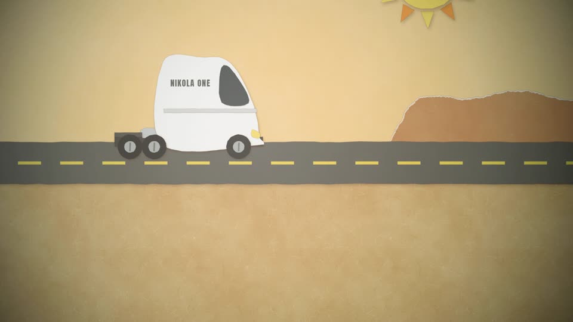<span>Approved</span></div>
<div><span>Dial build</span></div><figcaption>0:18.5</figcaption></figure><figure class="pair"><div>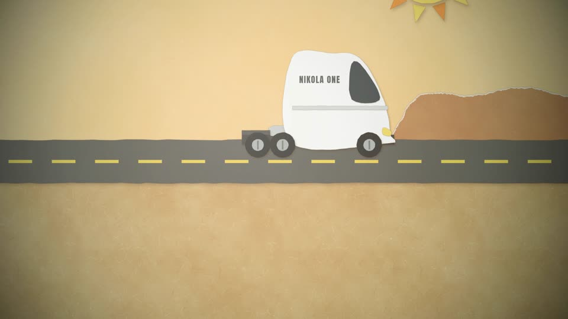<span>Approved</span></div>
<div><span>Dial build</span></div><figcaption>0:21.4</figcaption></figure></div><div class="cols"><div><h3>Narration (approved take)</h3><ol class="vo"><li>A huge white truck, gliding down a desert road.</li><li>Silent. Smooth. The future.</li></ol></div>
<div><h3>Picture</h3><p>The truck video fills the frame: a yellow halftone sky, a navy road, the white truck gliding along. A red REC dot blinks. This is the pitch, so the look is at its brightest.</p><h3>Sound (approved mix)</h3><ul class="snd"><li><span>rain light (music / ambience)</span><audio controls preload="none" src="sfx/b2_rain_light.mp3"></audio></li><li><span>clock tick a (music / ambience)</span><audio controls preload="none" src="sfx/b2_clock_tick_a.mp3"></audio></li><li><span>ambient mystery 01 (music / ambience)</span><audio controls preload="none" src="sfx/ambient_mystery_01.mp3"></audio></li><li><span>rain light (music / ambience)</span><audio controls preload="none" src="sfx/b2_rain_light.mp3"></audio></li></ul></div></div></section><section class="beat"><header><span class="num">0.3</span><h2>The stakes</h2><span class="dial">Dial 0 · mixed</span><span class="tc">0:22.7–0:33.0</span></header>
<div class="stills"><figure class="pair"><div>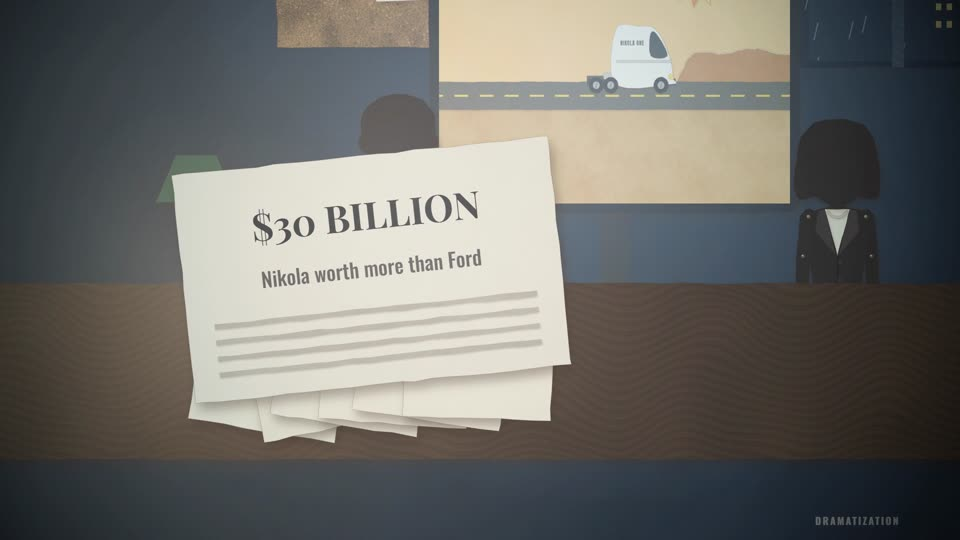<span>Approved</span></div>
<div>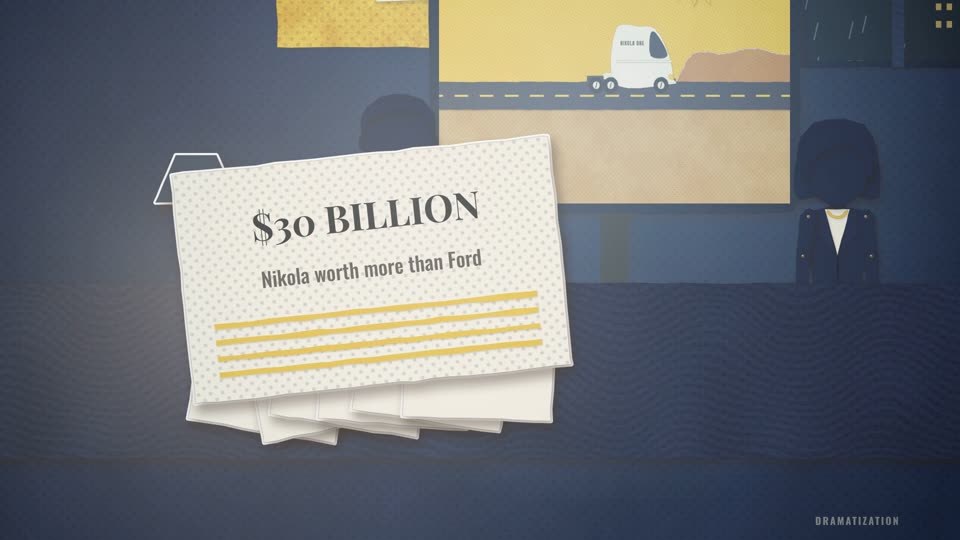<span>Dial build</span></div><figcaption>0:26.3</figcaption></figure><figure class="pair"><div>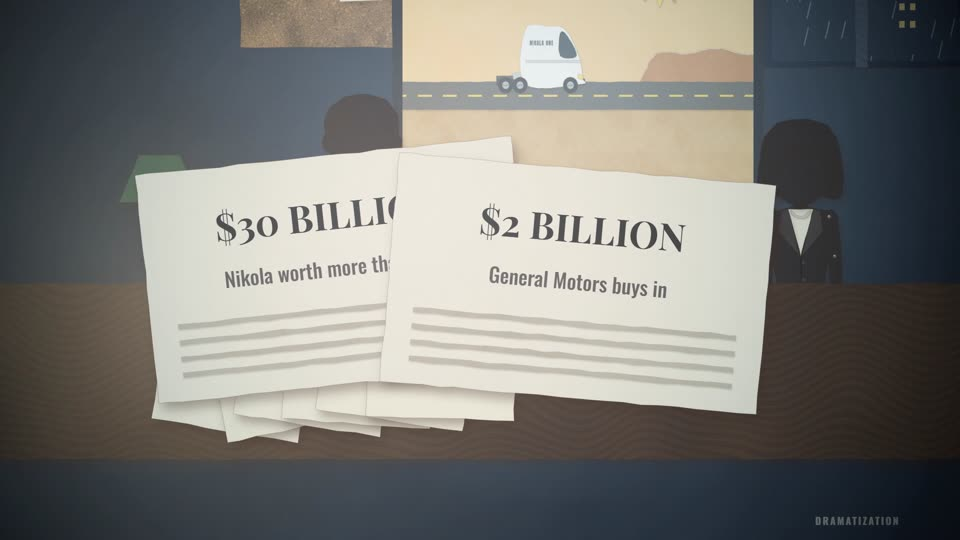<span>Approved</span></div>
<div>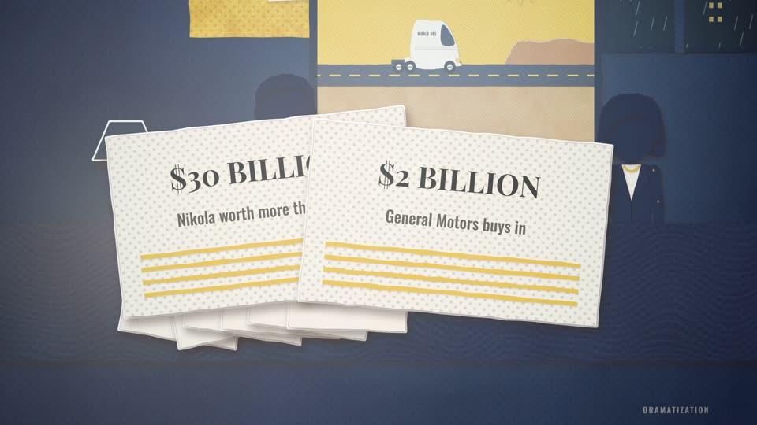<span>Dial build</span></div><figcaption>0:30.9</figcaption></figure></div><div class="cols"><div><h3>Narration (approved take)</h3><ol class="vo"><li>The company behind it is worth about thirty billion dollars. More than Ford.</li><li>And General Motors has just agreed to buy a two-billion-dollar piece of it.</li></ol></div>
<div><h3>Picture</h3><p>Back in the office, two newspapers drop onto the desk: $30 BILLION (Nikola worth more than Ford), then $2 BILLION (General Motors buys in).</p><h3>Sound (approved mix)</h3><ul class="snd"><li><span>ambient mystery 01 (music / ambience)</span><audio controls preload="none" src="sfx/ambient_mystery_01.mp3"></audio></li><li><span>rain light (music / ambience)</span><audio controls preload="none" src="sfx/b2_rain_light.mp3"></audio></li><li><span>paper slam a</span><audio controls preload="none" src="sfx/b2_paper_slam_a.mp3"></audio></li><li><span>paper slam b</span><audio controls preload="none" src="sfx/b2_paper_slam_b.mp3"></audio></li></ul></div></div></section><section class="beat"><header><span class="num">0.4</span><h2>It&#x27;s not flat</h2><span class="dial">Dial 0 · mixed</span><span class="tc">0:33.0–0:39.7</span></header>
<div class="stills"><figure class="pair"><div>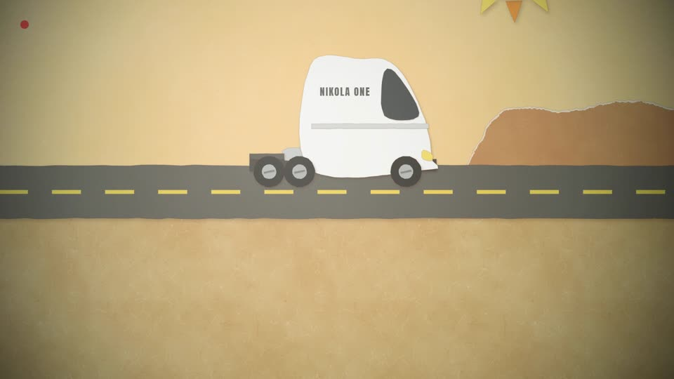<span>Approved</span></div>
<div>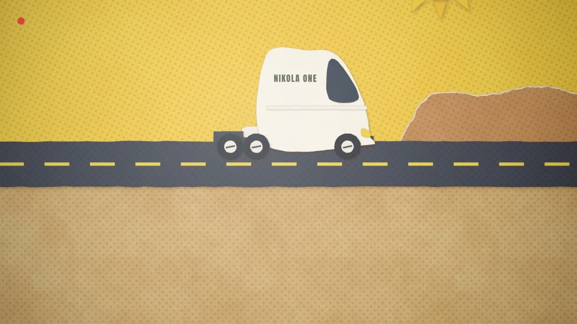<span>Dial build</span></div><figcaption>0:35.3</figcaption></figure><figure class="pair"><div>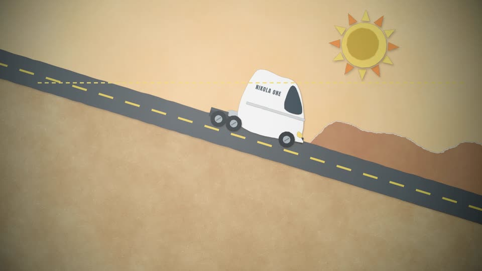<span>Approved</span></div>
<div>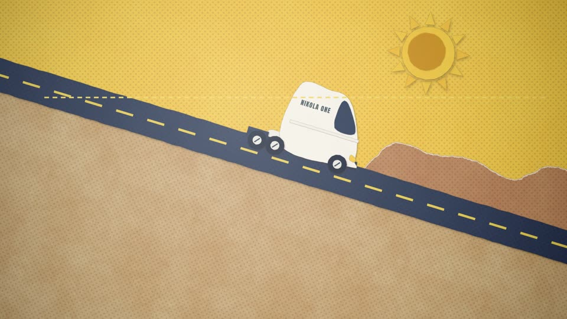<span>Dial build</span></div><figcaption>0:38.4</figcaption></figure></div><div class="cols"><div><h3>Narration (approved take)</h3><ol class="vo"><li>But the researchers have noticed something about that road.</li><li>It&#x27;s not flat.</li></ol></div>
<div><h3>Picture</h3><p>Inside the video again. The frame rotates level and the flat road turns out to be a steep slope; a dashed level line and the angle appear.</p><h3>Sound (approved mix)</h3><ul class="snd"><li><span>ambient mystery 01 (music / ambience)</span><audio controls preload="none" src="sfx/ambient_mystery_01.mp3"></audio></li><li><span>tension drone (music / ambience)</span><audio controls preload="none" src="sfx/b2_tension_drone.mp3"></audio></li><li><span>impactSoft heavy 002</span><audio controls preload="none" src="sfx/impactSoft_heavy_002.ogg"></audio></li></ul></div></div></section><section class="beat"><header><span class="num">0.5</span><h2>Towed, then let go</h2><span class="dial">Dial 0 · mixed</span><span class="tc">0:39.7–0:47.2</span></header>
<div class="stills"><figure class="pair"><div>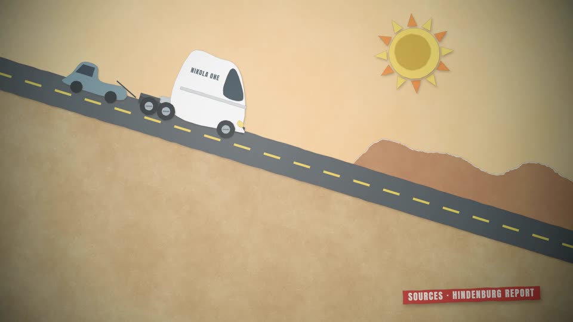<span>Approved</span></div>
<div>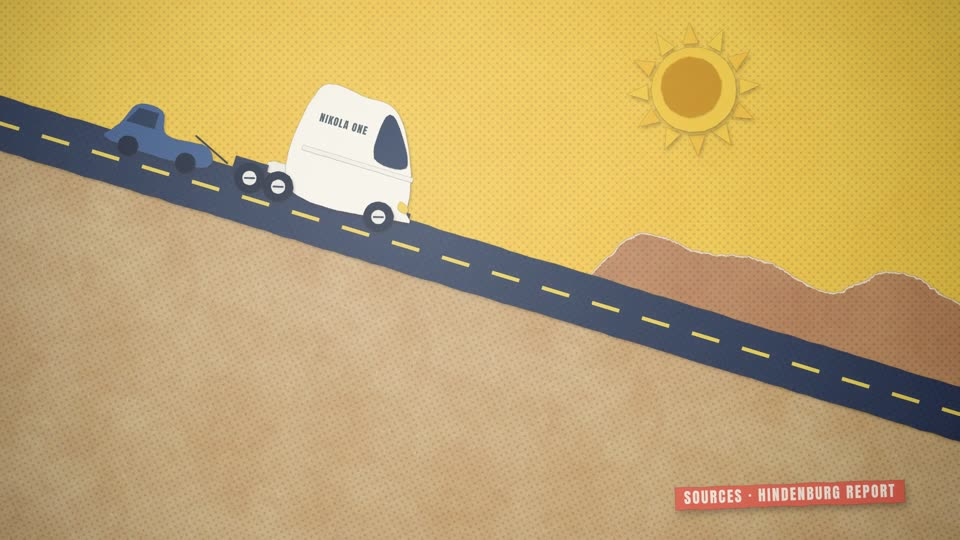<span>Dial build</span></div><figcaption>0:42.3</figcaption></figure><figure class="pair"><div>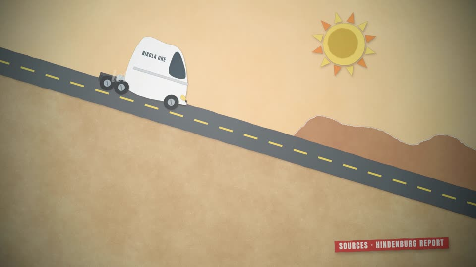<span>Approved</span></div>
<div>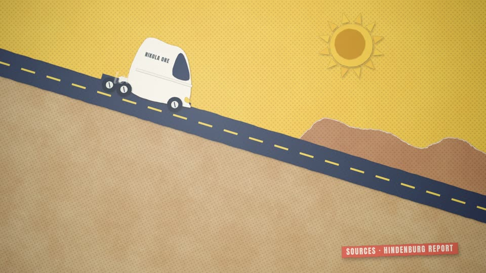<span>Dial build</span></div><figcaption>0:45.7</figcaption></figure></div><div class="cols"><div><h3>Narration (approved take)</h3><ol class="vo"><li>According to their sources, the truck wasn&#x27;t driving at all.</li><li>Someone had towed it to the top of a hill... and let it roll.</li></ol></div>
<div><h3>Picture</h3><p>A pickup tows the truck up the hill, the rope drops, the truck rolls. Tag: SOURCES · HINDENBURG REPORT.</p><h3>Sound (approved mix)</h3><ul class="snd"><li><span>tension drone (music / ambience)</span><audio controls preload="none" src="sfx/b2_tension_drone.mp3"></audio></li><li><span>clock tick g (music / ambience)</span><audio controls preload="none" src="sfx/b4_clock_tick_g.mp3"></audio></li><li><span>ambient tension 02 (music / ambience)</span><audio controls preload="none" src="sfx/ambient_tension_02.mp3"></audio></li><li><span>stamp press a</span><audio controls preload="none" src="sfx/b2_stamp_press_a.mp3"></audio></li><li><span>string snap a</span><audio controls preload="none" src="sfx/b4_string_snap_a.mp3"></audio></li></ul></div></div></section><section class="beat"><header><span class="num">0.6</span><h2>The choice</h2><span class="dial">Dial 0 · mixed</span><span class="tc">0:47.2–0:58.0</span></header>
<div class="stills"><figure class="pair"><div>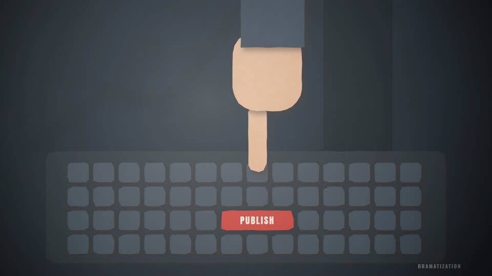<span>Approved</span></div>
<div>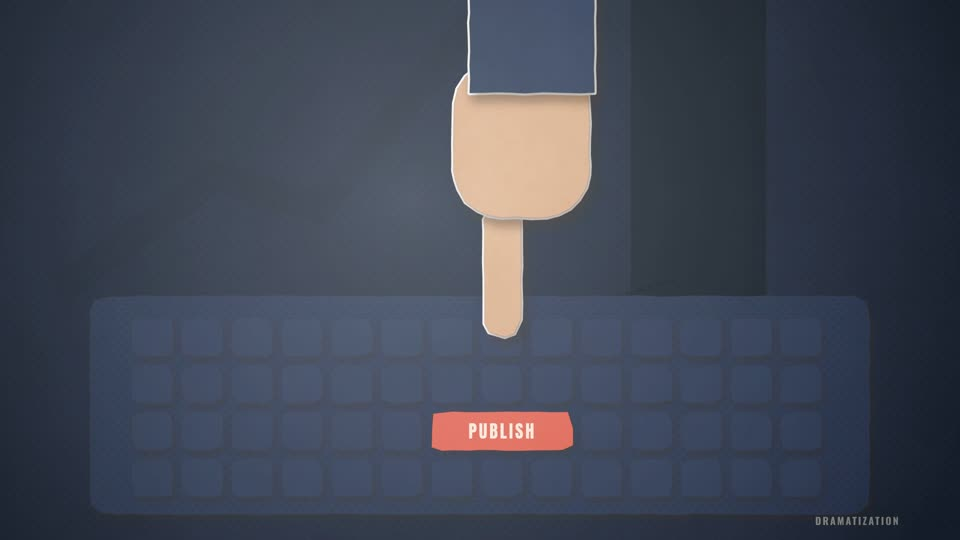<span>Dial build</span></div><figcaption>0:51.0</figcaption></figure><figure class="pair"><div><span>Approved</span></div>
<div><span>Dial build</span></div><figcaption>0:55.9</figcaption></figure></div><div class="cols"><div><h3>Narration (approved take)</h3><ol class="vo"><li>So now they have a choice.</li><li>Publish... and take on one of the hottest companies in America, and the biggest carmaker in the country.</li><li>Or stay quiet.</li></ol></div>
<div><h3>Picture</h3><p>A finger hovers over the red PUBLISH key while the shadows of a carmaker&#x27;s tower and a stock chart loom over the desk.</p><h3>Sound (approved mix)</h3><ul class="snd"><li><span>tension drone (music / ambience)</span><audio controls preload="none" src="sfx/b2_tension_drone.mp3"></audio></li><li><span>clock tick g (music / ambience)</span><audio controls preload="none" src="sfx/b4_clock_tick_g.mp3"></audio></li><li><span>ambient tension 02 (music / ambience)</span><audio controls preload="none" src="sfx/ambient_tension_02.mp3"></audio></li></ul></div></div></section><section class="beat"><header><span class="num">0.7</span><h2>Publish</h2><span class="dial">Dial 0 · mixed</span><span class="tc">0:58.0–1:00.8</span></header>
<div class="stills"><figure class="pair"><div><span>Approved</span></div>
<div><span>Dial build</span></div><figcaption>0:59.7</figcaption></figure></div><div class="cols"><div><h3>Narration (approved take)</h3><ol class="vo"><li>On September tenth, they hit publish.</li></ol></div>
<div><h3>Picture</h3><p>The key goes down and pages fly. SEPT 10 2020.</p><h3>Sound (approved mix)</h3><ul class="snd"><li><span>clock tick g (music / ambience)</span><audio controls preload="none" src="sfx/b4_clock_tick_g.mp3"></audio></li><li><span>ambient tension 02 (music / ambience)</span><audio controls preload="none" src="sfx/ambient_tension_02.mp3"></audio></li><li><span>tension 02 (music / ambience)</span><audio controls preload="none" src="sfx/tension_02.mp3"></audio></li><li><span>mouse click a</span><audio controls preload="none" src="sfx/b2_mouse_click_a.mp3"></audio></li><li><span>printer a</span><audio controls preload="none" src="sfx/b2_printer_a.mp3"></audio></li><li><span>cutout slide a</span><audio controls preload="none" src="sfx/b3_cutout_slide_a.mp3"></audio></li></ul></div></div></section><section class="beat"><header><span class="num">0.8</span><h2>The tease</h2><span class="dial">Dial 0 → 60 · the drain</span><span class="tc">1:00.8–1:06.5</span></header>
<div class="stills"><figure class="pair"><div><span>Approved</span></div>
<div><span>Dial build</span></div><figcaption>1:02.8</figcaption></figure><figure class="pair"><div>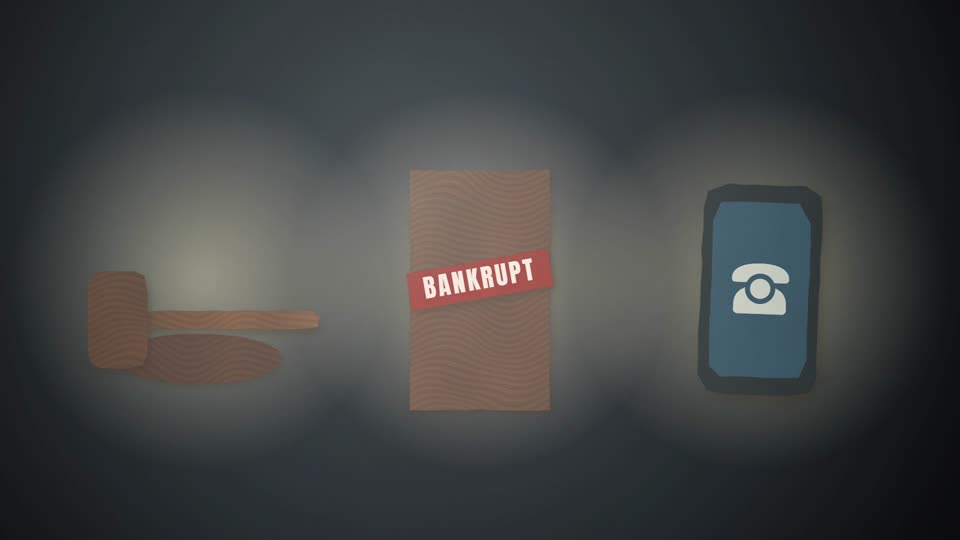<span>Approved</span></div>
<div>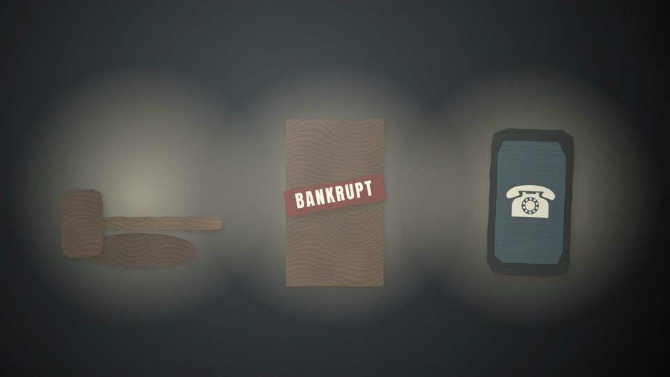<span>Dial build</span></div><figcaption>1:05.4</figcaption></figure></div><div class="cols"><div><h3>Narration (approved take)</h3><ol class="vo"><li>What happened next would end in a courtroom... a bankruptcy... and a phone call from the White House.</li></ol></div>
<div><h3>Picture</h3><p>Three spotlights in the dark: a gavel, a door stamped BANKRUPT, a ringing phone. The colour drains out while the line plays.</p><h3>Sound (approved mix)</h3><ul class="snd"><li><span>tension 02 (music / ambience)</span><audio controls preload="none" src="sfx/tension_02.mp3"></audio></li><li><span>gavel a</span><audio controls preload="none" src="sfx/b2_gavel_a.mp3"></audio></li><li><span>door thud a</span><audio controls preload="none" src="sfx/b2_door_thud_a.mp3"></audio></li><li><span>phone vibrate b</span><audio controls preload="none" src="sfx/b2_phone_vibrate_b.mp3"></audio></li></ul></div></div></section><section class="beat"><header><span class="num">0.9</span><h2>Title</h2><span class="dial">Dial 60 · into diorama</span><span class="tc">1:06.5–1:11.8</span></header>
<div class="stills"><figure class="pair"><div>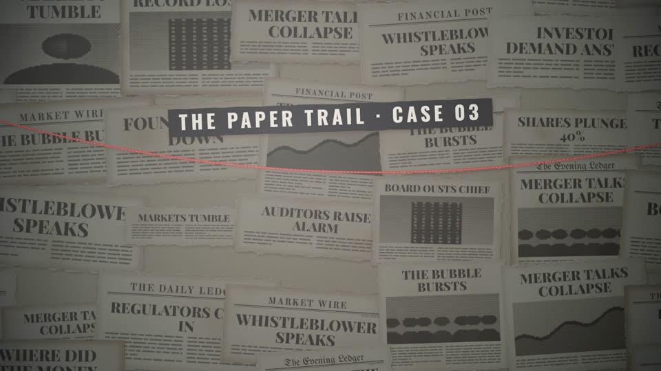<span>Approved</span></div>
<div>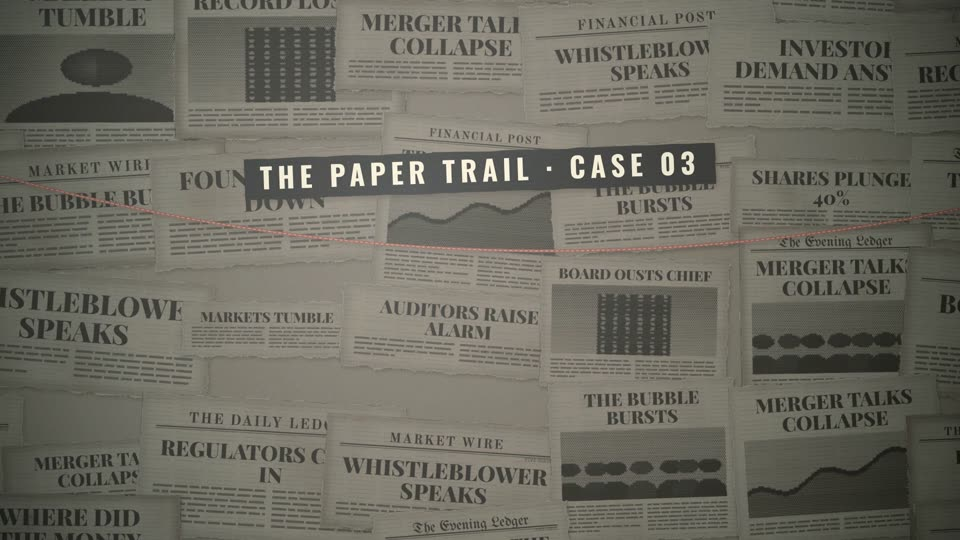<span>Dial build</span></div><figcaption>1:08.4</figcaption></figure><figure class="pair"><div>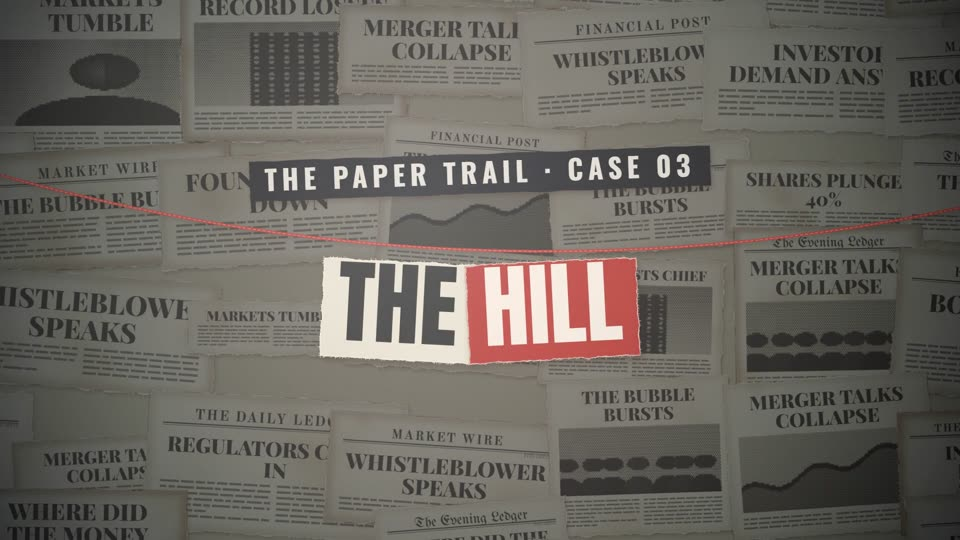<span>Approved</span></div>
<div>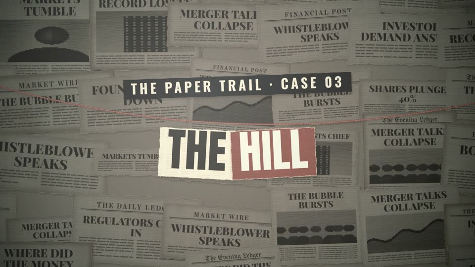<span>Dial build</span></div><figcaption>1:10.8</figcaption></figure></div><div class="cols"><div><h3>Narration (approved take)</h3><ol class="vo"><li>This is the paper trail. Case three. The Hill.</li></ol></div>
<div><h3>Picture</h3><p>The clipping wall and red string: THE PAPER TRAIL · CASE 03, then THE HILL. Sepia newsprint, with the red title strip kept as the accent.</p><h3>Sound (approved mix)</h3><ul class="snd"><li><span>tension 02 (music / ambience)</span><audio controls preload="none" src="sfx/tension_02.mp3"></audio></li><li><span>string snap b</span><audio controls preload="none" src="sfx/b4_string_snap_b.mp3"></audio></li><li><span>paper slam a</span><audio controls preload="none" src="sfx/b2_paper_slam_a.mp3"></audio></li></ul></div></div></section>
</main>